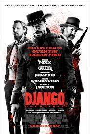

Christoph Waltz is an Austrian-German actor. Internationally, he is best known for his works with American filmmaker Quentin Tarantino.
He received acclaim for his supporting roles as SS-Standartenführer Hans Landa in Tarantino's Inglourious Basterds (2009) and bounty hunter
Dr. King Schultz in Tarantino's Django Unchained (2012). For each performance, Waltz won an Academy Award, a BAFTA Award, and a Golden Globe
Award for Best Supporting Actor. Additionally, he received the Best Actor Award at the Cannes Film Festival and a Screen Actors Guild Award
for his portrayal of Landa.
In 2010, Christoph_Waltz won the award for the best actor in s supporting role for the movie Inglorious Bastard.
In 2013, Christoph_Waltz won another the award for the best actor in s supporting role for the movie Django Unchained.